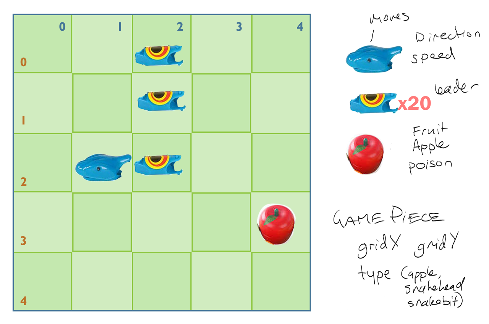
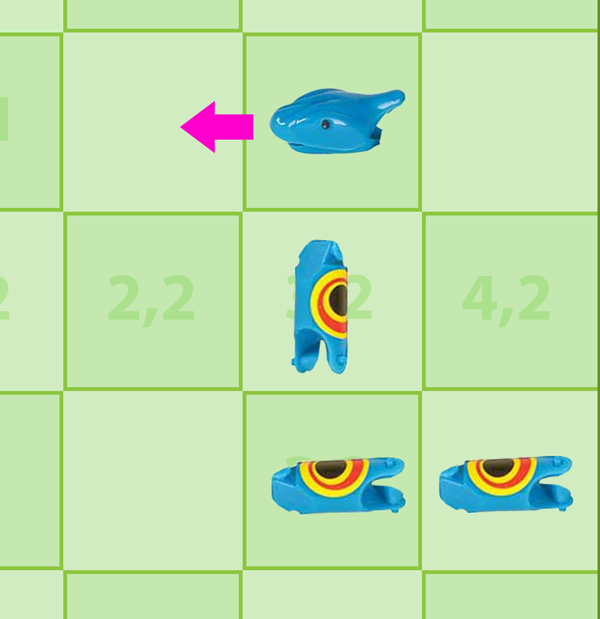
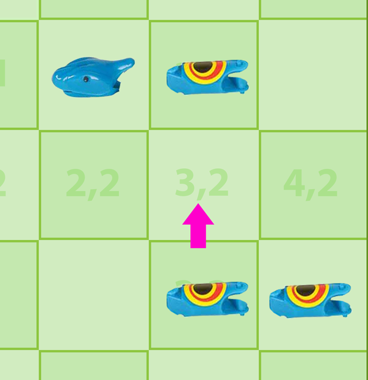

Wk11: Psuedosnakes and polymorphs
This may be enough content for both weeks…
- Wk11: Psuedosnakes and polymorphs
Todo
Finish A3.
Resources
Inheritance, Polymorphism:
- book chap 10 pdf
- Week11 Code
- includes Following Squares code!
- Class diagrams are super helpful
Putting it all together
You guys have all the c++ syntax you’re going to need now, really. Beyond the details of using classes with matching ancestors in the same collections (polymorphism), the rest is how to apply what you know.
Today I’ve suggested some ways to reduce the snake game situation to a manageable bits. I’ll mostly use psuedocode.
Maybe my psuedocode matches your plan, or you have your own variation: the job remaining for you guys is to design and write the classes, structs, functions and variables that make this go.
Keep imagining: the garden, the snake
Moving an object around and having it eat fruit for points is a pretty easy project. What makes this game a challenge is the articulated, growing snake, but don’t get hung up on the code too early!
Thinking too early or too long about code usually makes things harder.
- Step back and visualise it, consider game pieces.
- Write notes, draw things to devise a plan.
- Write your plan in plain english/pseudocode.

Re-describe the problem, write out your current approach, or a whole new one.
Summarise the game start and loop
Lets psuedocode the game so we know where the snake bit fits.
Remember: Coding is just listing instructions for handling a situation.
Programs:
Start:
1. Gathering what we know
2. Putting what we know in piles that go together
Loop:
3. Get input
4. Checking the state of things, adjusting things, checking their effects
5. Drawing the new state of things
Our Snake game
Start:
1. Gather what we know about Garden and game pieces in it
2. Put that data together in objects with properties that make sense
Loop:
3. Get input
3. Spawn fruit and move the snake. Did the snake hit anything? Outcome?
4. Draw the outcome.
See how this reads:
Does it do the trick aside from snake stuff?
Start Program GrowingSnakeEatingFruitInDetentionGarden ----------
We have some collections:
A garden is a grid of spaces that can be occupied
A garden has boundaries, a snake, fruit.
A snake is a collection of body lengths, one of which is a head that has speed and direction
While snake lives
DO SNAKE THINGS
loop (while snake lives)
Show snake is dead
Wait on key press to close program?
(or offer play again if you like)
End Program GrowingSnakeEatingFruitInDetentionGarden ---------
The snake, specifically




What’s happening here?
- A head moves, leaving a space.
- The next piece of the snake, a body part, moves to fill the spot.
- The following piece moves into the gap left by it’s predecessor, and so on.
Discovery: If you know where the piece ahead of you was was before it moved, you simply take their spot and the snake shape will remain.
Zoom into DO SNAKE THINGS and see what’s happening.
...
If player hits up, left, right or down
change snake head direction
Snake head moves a little way, in its direction, through garden space
If snake head enters a new garden cell
If cell is outside boundary
snake head teleports to opposite boundary
Move first body piece to cell vacated by head
With each successive body piece
Move each body piece to the cell vacated by its predecessor
loop
If cell contains fruit
Delete fruit
Add snake segment to cell last occupied by tail
Gain points
If cell contains snake body part
Snake is now dead
end if (snake head new cell)
...
Something I learned there
I learned things from writing that down, which you’ve probably experienced before. It’s super valuable.
Writing down things you know sometimes reveals things you didn’t know you knew.
I learned that everything really starts to happen when the snake head enters a new cell. The action cascades from there.
How do I know where my leader is and was?
If the snake pieces want to follow their immediate leader, we’ll need to know where each one was before they moved.
Q: How do we know where something was last frame?
A: Ask it.
If bits are going to tell us their past, each bit needs to remember where they were one square ago
Knowing real location and grid location
We gained some control of the game speed last week by moving in fractions of a square each frame.
- We moved in a real number space (1.8x, 2.45y)
- It was finer than the grid world (1x, 2y).
- Like in real life we move chess pieces or snake pieces through real space smoothly to place them on a square.
We cast to int last week, chopping off any decimal places. eg:
Over several frames:
xPos: 1.0, 1.4, 1.8, 2.2, 2.6
xGrid: 1, 1, 1, 2, 2
It can cause issues. Options to consider: floor, ceil, round.
// ----- Rounding floats in c++ ------- // If we assign a float to an int, 3.9 becomes 3. Truncation. // We need to round up or down. #include <iostream> #include <math.h> int main() { float xGrid = 1.4f; float yGrid = 2.6f; int xGrid = round(xGrid); // round returns a float, eg 3.0, int yGrid = round(yGrid); // so assigning to an int truncates only zeroes cout << "xGrid = " << xGrid << ", xGrid = " << xGrid << endl << endl; cout << "yGrid = " << yGrid << ", yGrid = " << yGrid << endl << endl; } // Outputs: // xGrid = 1.4, xGrid = 1 // yGrid = 2.6, yGrid = 3 // 2.6 rounded up, 1.4 down.
Change of grid square
Trackign xGrid and xGridOld are easy:
cpp code
update {
store position in a variable before we move
xGridOld = xGrid;
move
xGrid += speedPerFrame;
}
how do we also track
- keep xGridOld and yGridOld (value in previous frame)
- test if either differs from current frame value
- If changed, we’re in a new cell.
Write some pseudocode for a program that:
- Starts a pixel at 0
- Moves pixel right on screen at 0.1 pixels per frame
- if rounding has taken us to a new whole pixel, print a message
Frame rate independence
We were moving at 1 unit per frame. Our new speed has to be in units per second instead of units per frame.
If we’re traveling in units per second, we need to know how much of a second has passed. That’s usually called Delta Time.
Delta means change, time means time.
How that looks in psuedo code:
We have:
A circle with a speed (distance per second)
Every Frame
Get fraction of a second elapsed since last frame (delta time)
Multiply circle speed (distance per second) by delta time (eg 2 * 0.01)
Move that little distance.
Draw circle centered at nearest whole pixel
Loop Every Frame
The end result: we move at n units per second regardless of frame rate.
Side benefits
There’s another great benefit tho:
Adjusting movement every frame results in smoother motion.
Sometimes it’s 15 ms since last frame, sometimes 60. If we moved at a set speed-per-frame, a series of short frames would move us less total distance than a series of long frames. That’s what slow down is in old frame-based games.
smart snake, simple head/parts
Maybe you don’t want many classes, game and Snake are enough. Structs for the rest. Snake will do a lot of checking lists.
SmartSnakeObject
Things that are just structs:
a head with speed, direction
body parts (each with an assigned leader)
fruit
each frame while alive: (perhaps via calls from game. snake has no automatic personal update loop like engine does)
if asked to, store new direction in head
store head current position
move head by its speed in direction
with each part in body
store part's current position
move part to its leader's (head or a part) old position
check if head is sharing cell with fruit
if so add body part
declare/note fruit eaten
check if head sharing cell with any body part
if so note am now dead
loop frame while alive
simple snake, smart head/parts
Maybe you feel snake is too complicated, and you don’t want to remember and edit the data in each struct. Make smart body parts.
SimpleSnakeObject:
we have a head objectwith speed, direction
we have body part objects that know the part/head they are following
each frame while alive:
if asked to, tell head about new direction
ask head to move itself
for each part in body
ask body part to move itself
Ask head to check if it has eaten fruit (provide fruit in question)
if so tell world about gone fruit
add body part
ask head if it's bitten any body parts (provide parts)
If so.. note am now dead.
loop frame while alive
Enter Inheritance.
Lets look at attributes of a smart head/body part.
SnakeHead:
- xGrid
- yGrid
- direction, speed
- xGrid, xGridOld
- yGrid, yGridOld
- colour
- move()
- isEating(fruit)
- isBitingAny(parts)
SnakeBodyPart
- leader (head or part)
- xGrid, xGridOld
- yGrid, yGridOld
- colour
- move()
Note things in italics were common to both. Also the thing in bold doesn’t differentiate betweenheads and bodyparts. Are these candidates for inheritance?
Perhaps both a
SnakeHeadand aSnakeBodyPartare each aBitOfSnake.
Certainly our interchangeable
leadercould beBitOfSnake leader;
Enter polymorphism. Maybe.
When two things have traits in common and can be used interchangeably, that’s polymorphism. They are different types but, for some purposes, effectively the same. Take these library items for example.
Library Items:
- book
- magazine
- sample test
All are printed, borrowable items that could be in a collection. You could loop through that collection and check
name,isBorrowedorpageCount. That’s polymorphism.
In c++:
public class Book : PrintedBorrowableItem { .. } public class Magazine : PrintedBorrowableItem { .. } // and then, in a library sim, a vector can hold anything that inherits // from PrintedBorrowableItem public vector<PrintedBorrowableItem> items; // We can now act on them indiscriminately, so long as we // only use public variables or functions found in their mutual // ancestor, the PrintedBorrowableItem. for (int i = 0; i < items.size(); i++) { cout << "Item " << items[0].name << "'s borrowed status is " << items[0].isBorrowed << endl; } // or using C++11's equivalent of for each for (auto &item : items) // access by reference to avoid copying { cout << "Item " << item->name << "'s borrowed status is " << item->isBorrowed << endl; }
So, SnakeBit polymorphism?
If our snake is asked to update, sure it has to do some different things with the head, like give it a new direction. But then maybe…
In Snake we have:
bits, a list consisting of the head and all body parts
head, a pointer to the head bit
// later in snake
change head direction or speed (using head pointer)
// and maybe in Snake.move or Snake.update
for each bit in SnakeBits:
ask bit to move
// the head will move using speed and direction, the rest will
// slide into their leader bit's abandoned cell
And perhaps in our olc derived SnakeGame class’ render/draw routine:
We have:
a Snake object
for each bit Snake gives us via GetAllBits
Draw a square in bit's colour, at bit's xGrid, bit's yGrid.
Interfaces?
Maybe a man and a dog and a log can all float() or holdTheDoor(), but they don’t need to share a common ancestor to do it.
Interfaces let you define common functionality without having to inherit from a common ancestor. They’re a feature of C++ and many other OO languages.